2022 Advanced Higher Computing Science marking instructions
Source: Scottish Qualifications Authority (SQA) / Qualifications Scotland. This is a StemInteract HTML companion, not an official HTML edition. Selectable text is supplied alongside original page images. Use the images or original PDF for equations, powers, fractions, vector notation, tables and diagrams; text extraction cannot fully preserve mathematical layout.
Jump to a question
PDF page 1
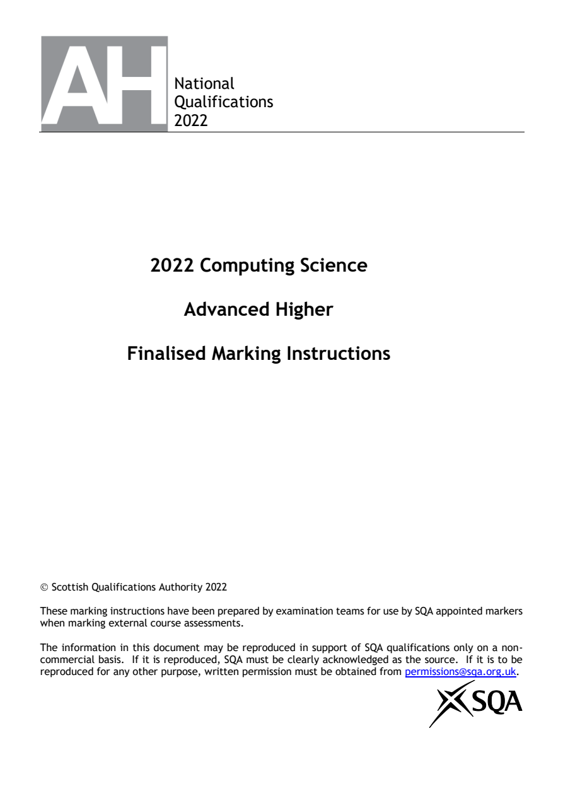
Selectable page text
National
Qualifications
2022
2022 Computing Science
Advanced Higher
Finalised Marking Instructions
© Scottish Qualifications Authority 2022
These marking instructions have been prepared by examination teams for use by SQA appointed markers
when marking external course assessments.
The information in this document may be reproduced in support of SQA qualifications only on a non-
commercial basis. If it is reproduced, SQA must be clearly acknowledged as the source. If it is to be
reproduced for any other purpose, written permission must be obtained from permissions@sqa.org.uk.PDF page 2
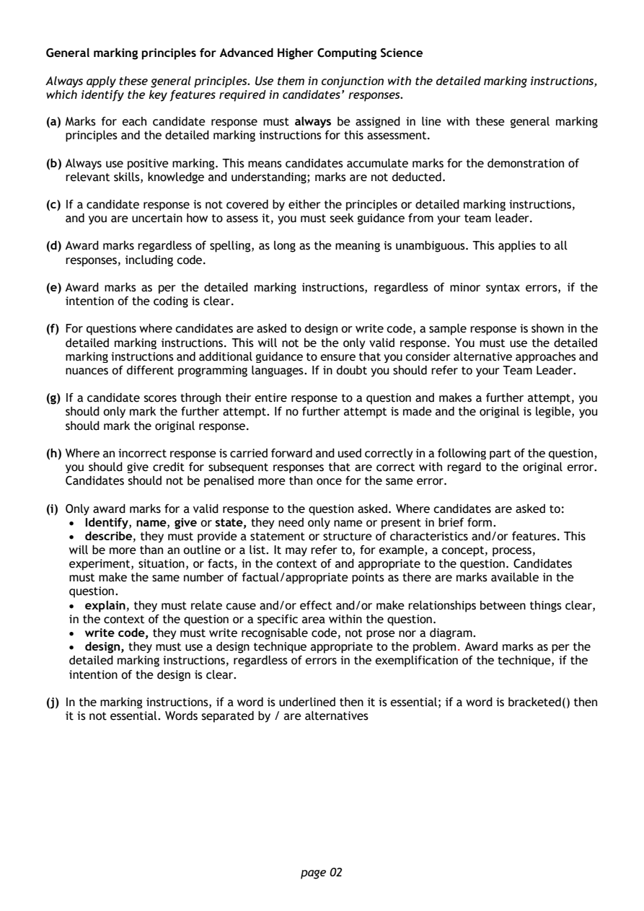
Selectable page text
General marking principles for Advanced Higher Computing Science
Always apply these general principles. Use them in conjunction with the detailed marking instructions,
which identify the key features required in candidates’ responses.
(a) Marks for each candidate response must always be assigned in line with these general marking
principles and the detailed marking instructions for this assessment.
(b) Always use positive marking. This means candidates accumulate marks for the demonstration of
relevant skills, knowledge and understanding; marks are not deducted.
(c) If a candidate response is not covered by either the principles or detailed marking instructions,
and you are uncertain how to assess it, you must seek guidance from your team leader.
(d) Award marks regardless of spelling, as long as the meaning is unambiguous. This applies to all
responses, including code.
(e) Award marks as per the detailed marking instructions, regardless of minor syntax errors, if the
intention of the coding is clear.
(f) For questions where candidates are asked to design or write code, a sample response is shown in the
detailed marking instructions. This will not be the only valid response. You must use the detailed
marking instructions and additional guidance to ensure that you consider alternative approaches and
nuances of different programming languages. If in doubt you should refer to your Team Leader.
(g) If a candidate scores through their entire response to a question and makes a further attempt, you
should only mark the further attempt. If no further attempt is made and the original is legible, you
should mark the original response.
(h) Where an incorrect response is carried forward and used correctly in a following part of the question,
you should give credit for subsequent responses that are correct with regard to the original error.
Candidates should not be penalised more than once for the same error.
(i) Only award marks for a valid response to the question asked. Where candidates are asked to:
• Identify, name, give or state, they need only name or present in brief form.
• describe, they must provide a statement or structure of characteristics and/or features. This
will be more than an outline or a list. It may refer to, for example, a concept, process,
experiment, situation, or facts, in the context of and appropriate to the question. Candidates
must make the same number of factual/appropriate points as there are marks available in the
question.
• explain, they must relate cause and/or effect and/or make relationships between things clear,
in the context of the question or a specific area within the question.
• write code, they must write recognisable code, not prose nor a diagram.
• design, they must use a design technique appropriate to the problem. Award marks as per the
detailed marking instructions, regardless of errors in the exemplification of the technique, if the
intention of the design is clear.
(j) In the marking instructions, if a word is underlined then it is essential; if a word is bracketed() then
it is not essential. Words separated by / are alternatives
page 02PDF page 3
Question 1Question 2Question 3Question 4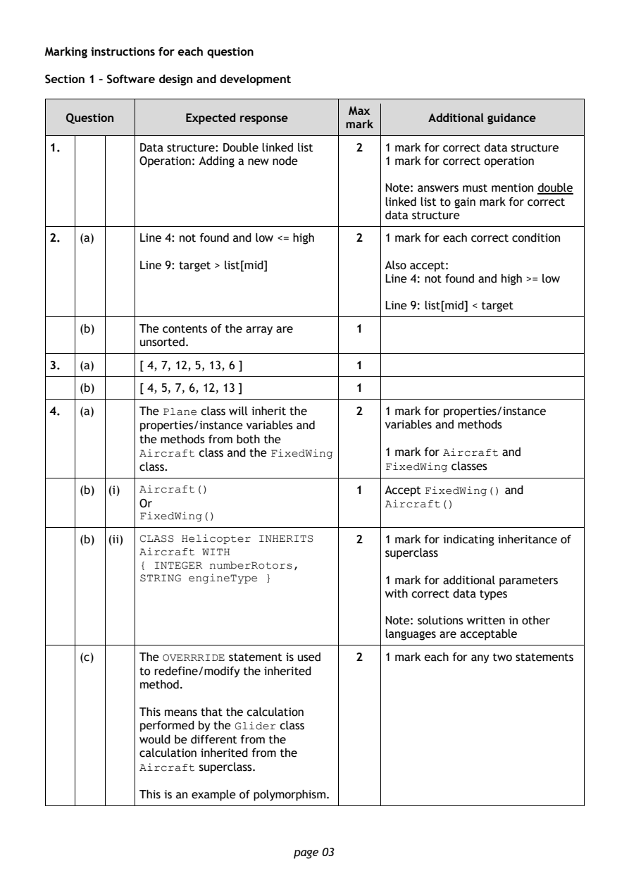
Selectable page text
Marking instructions for each question
Section 1 – Software design and development
Max
Question Expected response Additional guidance
mark
1. Data structure: Double linked list 2 1 mark for correct data structure
Operation: Adding a new node 1 mark for correct operation
Note: answers must mention double
linked list to gain mark for correct
data structure
2. (a) Line 4: not found and low <= high 2 1 mark for each correct condition
Line 9: target > list[mid] Also accept:
Line 4: not found and high >= low
Line 9: list[mid] < target
(b) The contents of the array are 1
unsorted.
3. (a) [ 4, 7, 12, 5, 13, 6 ] 1
(b) [ 4, 5, 7, 6, 12, 13 ] 1
4. (a) The Plane class will inherit the 2 1 mark for properties/instance
properties/instance variables and variables and methods
the methods from both the
Aircraft class and the FixedWing 1 mark for Aircraft and
class. FixedWing classes
(b) (i) Aircraft() 1 Accept FixedWing() and
Or Aircraft()
FixedWing()
(b) (ii) CLASS Helicopter INHERITS 2 1 mark for indicating inheritance of
Aircraft WITH superclass
{ INTEGER numberRotors,
STRING engineType } 1 mark for additional parameters
with correct data types
Note: solutions written in other
languages are acceptable
(c) The OVERRRIDE statement is used 2 1 mark each for any two statements
to redefine/modify the inherited
method.
This means that the calculation
performed by the Glider class
would be different from the
calculation inherited from the
Aircraft superclass.
This is an example of polymorphism.
page 03PDF page 4
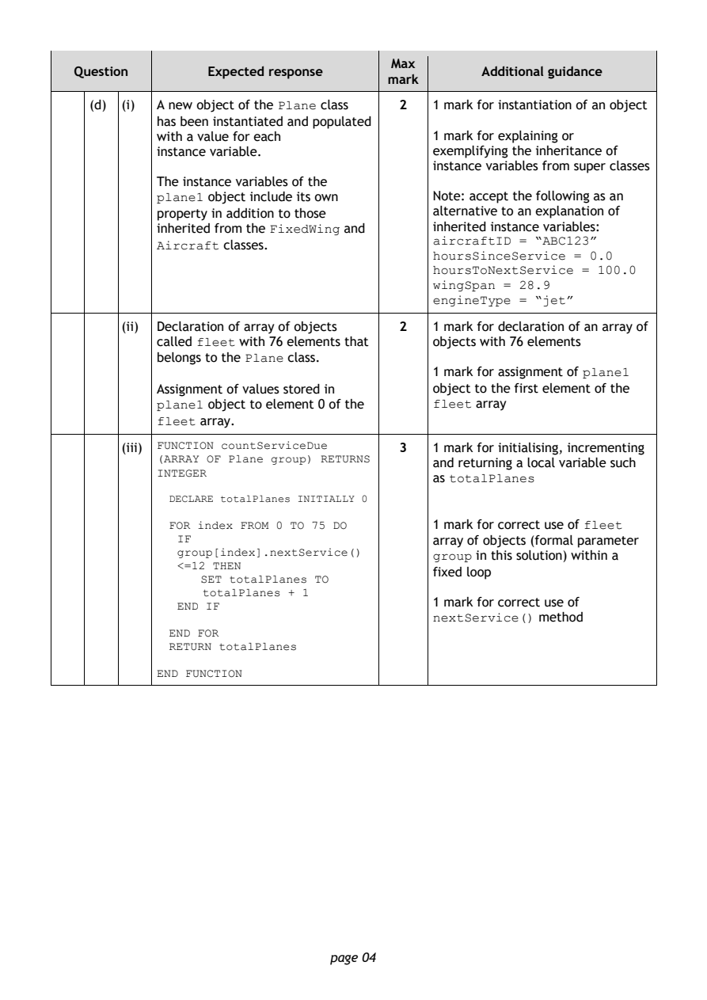
Selectable page text
Max
Question Expected response Additional guidance
mark
(d) (i) A new object of the Plane class 2 1 mark for instantiation of an object
has been instantiated and populated
with a value for each 1 mark for explaining or
instance variable. exemplifying the inheritance of
instance variables from super classes
The instance variables of the
plane1 object include its own Note: accept the following as an
property in addition to those alternative to an explanation of
inherited from the FixedWing and inherited instance variables:
aircraftID = “ABC123”
Aircraft classes.
hoursSinceService = 0.0
hoursToNextService = 100.0
wingSpan = 28.9
engineType = “jet”
(ii) Declaration of array of objects 2 1 mark for declaration of an array of
called fleet with 76 elements that objects with 76 elements
belongs to the Plane class.
1 mark for assignment of plane1
Assignment of values stored in object to the first element of the
plane1 object to element 0 of the fleet array
fleet array.
(iii) FUNCTION countServiceDue 3 1 mark for initialising, incrementing
(ARRAY OF Plane group) RETURNS and returning a local variable such
INTEGER
as totalPlanes
DECLARE totalPlanes INITIALLY 0
FOR index FROM 0 TO 75 DO 1 mark for correct use of fleet
IF array of objects (formal parameter
group[index].nextService() group in this solution) within a
<=12 THEN
fixed loop
SET totalPlanes TO
totalPlanes + 1
1 mark for correct use of
END IF
nextService() method
END FOR
RETURN totalPlanes
END FUNCTION
page 04PDF page 5
Question 5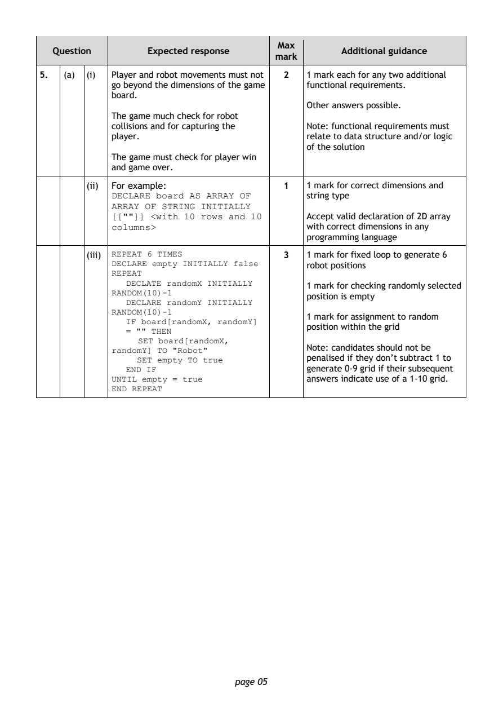
Selectable page text
Max
Question Expected response Additional guidance
mark
5. (a) (i) Player and robot movements must not 2 1 mark each for any two additional
go beyond the dimensions of the game functional requirements.
board.
Other answers possible.
The game much check for robot
collisions and for capturing the Note: functional requirements must
player. relate to data structure and/or logic
of the solution
The game must check for player win
and game over.
(ii) For example: 1 1 mark for correct dimensions and
DECLARE board AS ARRAY OF string type
ARRAY OF STRING INITIALLY
[[""]] <with 10 rows and 10 Accept valid declaration of 2D array
columns> with correct dimensions in any
programming language
(iii) REPEAT 6 TIMES 3 1 mark for fixed loop to generate 6
DECLARE empty INITIALLY false robot positions
REPEAT
DECLATE randomX INITIALLY
1 mark for checking randomly selected
RANDOM(10)-1
position is empty
DECLARE randomY INITIALLY
RANDOM(10)-1
1 mark for assignment to random
IF board[randomX, randomY]
position within the grid
= "" THEN
SET board[randomX,
Note: candidates should not be
randomY] TO "Robot"
SET empty TO true penalised if they don’t subtract 1 to
END IF generate 0-9 grid if their subsequent
UNTIL empty = true answers indicate use of a 1-10 grid.
END REPEAT
page 05PDF page 6
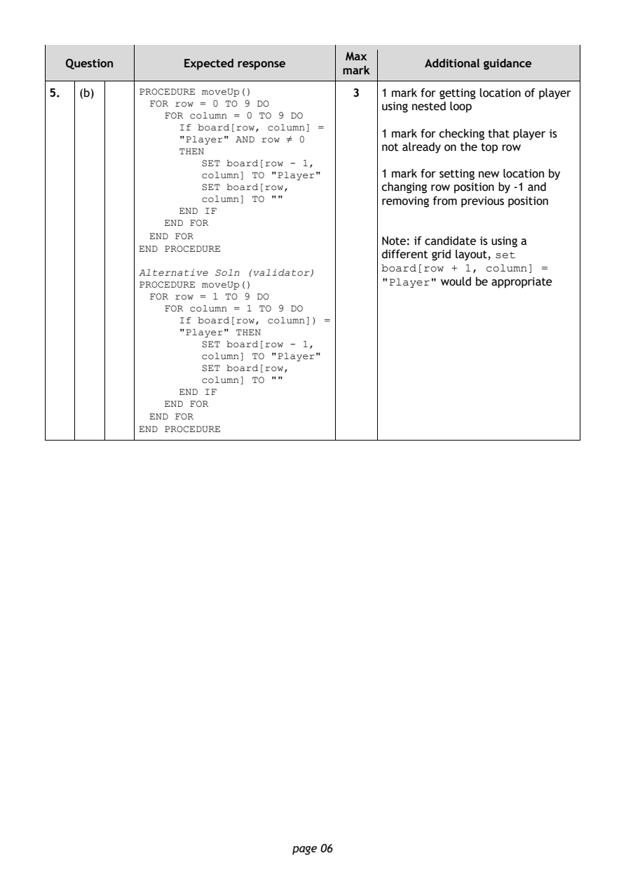
Selectable page text
Max
Question Expected response Additional guidance
mark
5. (b) PROCEDURE moveUp() 3 1 mark for getting location of player
FOR row = 0 TO 9 DO using nested loop
FOR column = 0 TO 9 DO
If board[row, column] =
1 mark for checking that player is
"Player" AND row ≠ 0
not already on the top row
THEN
SET board[row - 1,
column] TO "Player" 1 mark for setting new location by
SET board[row, changing row position by -1 and
column] TO "" removing from previous position
END IF
END FOR
END FOR
Note: if candidate is using a
END PROCEDURE
different grid layout, set
board[row + 1, column] =
Alternative Soln (validator)
PROCEDURE moveUp() "Player" would be appropriate
FOR row = 1 TO 9 DO
FOR column = 1 TO 9 DO
If board[row, column]) =
"Player" THEN
SET board[row - 1,
column] TO "Player"
SET board[row,
column] TO ""
END IF
END FOR
END FOR
END PROCEDURE
page 06PDF page 7
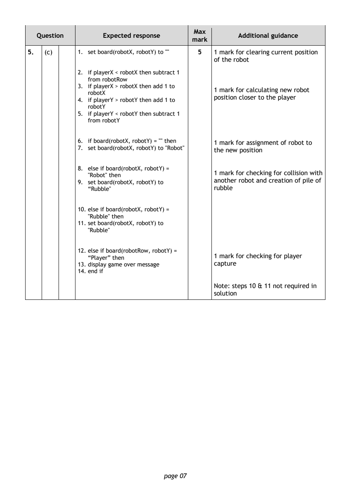
Selectable page text
Max
Question Expected response Additional guidance
mark
5. (c) 1. set board(robotX, robotY) to "" 5 1 mark for clearing current position
of the robot
2. if playerX < robotX then subtract 1
from robotRow
3. if playerX > robotX then add 1 to
1 mark for calculating new robot
robotX
position closer to the player
4. if playerY > robotY then add 1 to
robotY
5. if playerY < robotY then subtract 1
from robotY
6. if board(robotX, robotY) = "" then 1 mark for assignment of robot to
7. set board(robotX, robotY) to "Robot"
the new position
8. else if board(robotX, robotY) =
1 mark for checking for collision with
"Robot" then
another robot and creation of pile of
9. set board(robotX, robotY) to
“Rubble" rubble
10. else if board(robotX, robotY) =
"Rubble" then
11. set board(robotX, robotY) to
"Rubble"
12. else if board(robotRow, robotY) =
1 mark for checking for player
“Player” then
13. display game over message capture
14. end if
Note: steps 10 & 11 not required in
solution
page 07PDF page 8
Question 6Question 7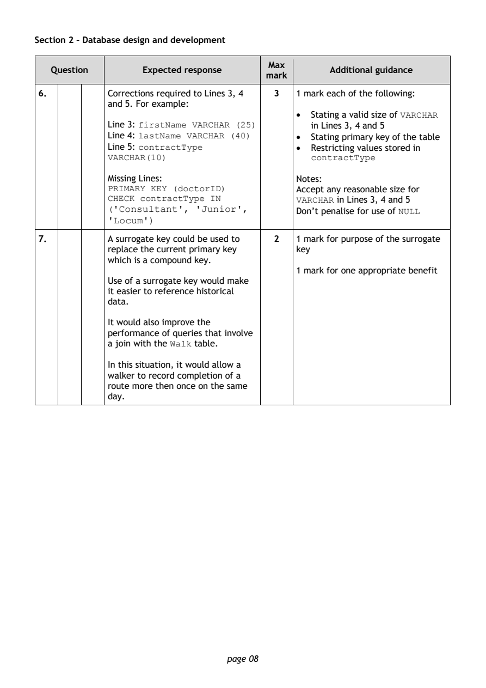
Selectable page text
Section 2 – Database design and development
Max
Question Expected response Additional guidance
mark
6. Corrections required to Lines 3, 4 3 1 mark each of the following:
and 5. For example:
• Stating a valid size of VARCHAR
Line 3: firstName VARCHAR (25) in Lines 3, 4 and 5
Line 4: lastName VARCHAR (40) • Stating primary key of the table
Line 5: contractType • Restricting values stored in
VARCHAR(10) contractType
Missing Lines: Notes:
PRIMARY KEY (doctorID) Accept any reasonable size for
CHECK contractType IN VARCHAR in Lines 3, 4 and 5
('Consultant', 'Junior',
Don’t penalise for use of NULL
'Locum')
7. A surrogate key could be used to 2 1 mark for purpose of the surrogate
replace the current primary key key
which is a compound key.
1 mark for one appropriate benefit
Use of a surrogate key would make
it easier to reference historical
data.
It would also improve the
performance of queries that involve
a join with the Walk table.
In this situation, it would allow a
walker to record completion of a
route more then once on the same
day.
page 08PDF page 9
Question 8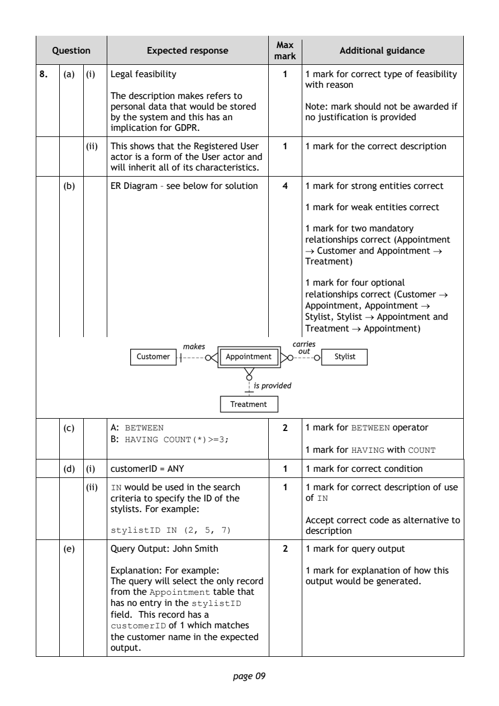
Selectable page text
Max
Question Expected response Additional guidance
mark
8. (a) (i) Legal feasibility 1 1 mark for correct type of feasibility
with reason
The description makes refers to
personal data that would be stored Note: mark should not be awarded if
by the system and this has an no justification is provided
implication for GDPR.
(ii) This shows that the Registered User 1 1 mark for the correct description
actor is a form of the User actor and
will inherit all of its characteristics.
(b) ER Diagram – see below for solution 4 1 mark for strong entities correct
1 mark for weak entities correct
1 mark for two mandatory
relationships correct (Appointment
→ Customer and Appointment →
Treatment)
1 mark for four optional
relationships correct (Customer →
Appointment, Appointment →
Stylist, Stylist → Appointment and
Treatment → Appointment)
(c) A: BETWEEN 2 1 mark for BETWEEN operator
B: HAVING COUNT(*)>=3;
1 mark for HAVING with COUNT
(d) (i) customerID = ANY 1 1 mark for correct condition
(ii) IN would be used in the search 1 1 mark for correct description of use
criteria to specify the ID of the of IN
stylists. For example:
Accept correct code as alternative to
stylistID IN (2, 5, 7) description
(e) Query Output: John Smith 2 1 mark for query output
Explanation: For example: 1 mark for explanation of how this
The query will select the only record output would be generated.
from the Appointment table that
has no entry in the stylistID
field. This record has a
customerID of 1 which matches
the customer name in the expected
output.
page 09PDF page 10
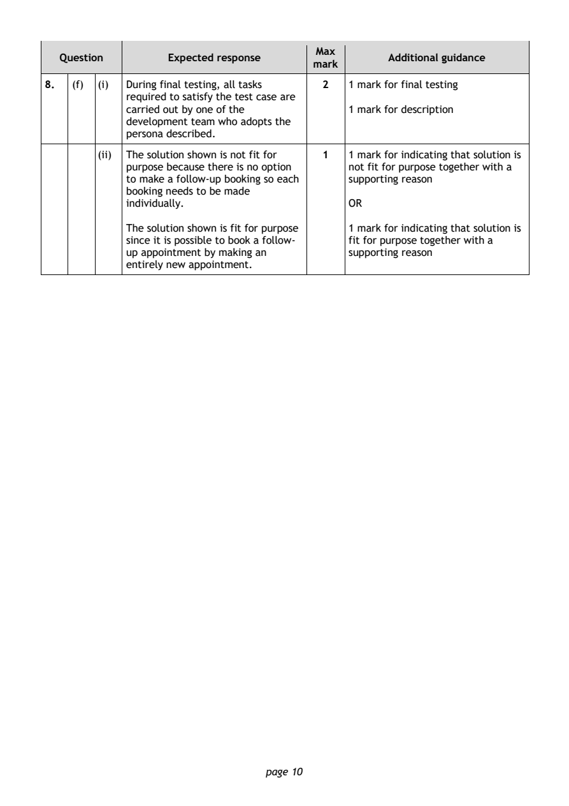
Selectable page text
Max
Question Expected response Additional guidance
mark
8. (f) (i) During final testing, all tasks 2 1 mark for final testing
required to satisfy the test case are
carried out by one of the 1 mark for description
development team who adopts the
persona described.
(ii) The solution shown is not fit for 1 1 mark for indicating that solution is
purpose because there is no option not fit for purpose together with a
to make a follow-up booking so each supporting reason
booking needs to be made
individually. OR
The solution shown is fit for purpose 1 mark for indicating that solution is
since it is possible to book a follow- fit for purpose together with a
up appointment by making an supporting reason
entirely new appointment.
page 10PDF page 11
Question 9Question 10Question 11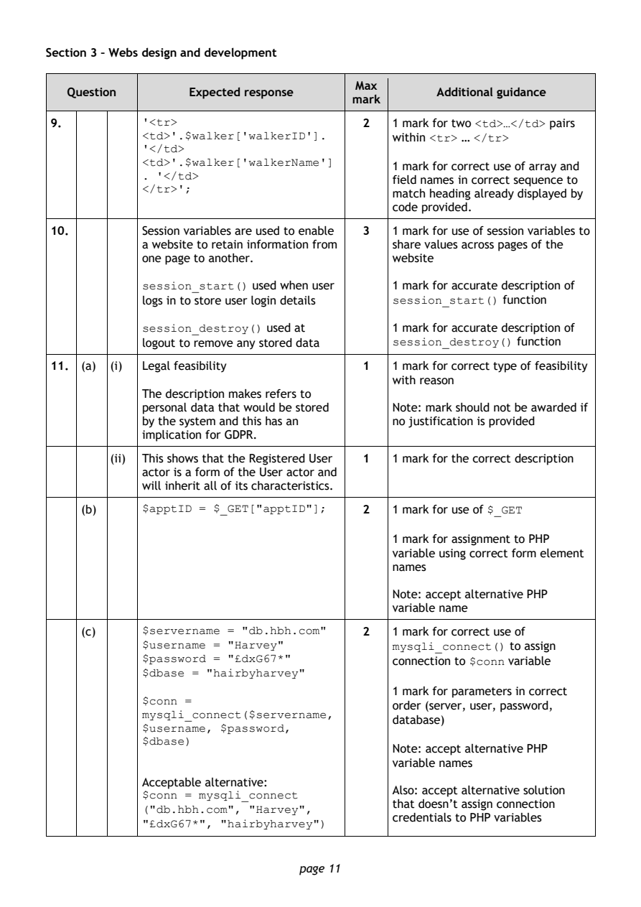
Selectable page text
Section 3 – Webs design and development
Max
Question Expected response Additional guidance
mark
9. '<tr> 2 1 mark for two <td>…</td> pairs
<td>'.$walker['walkerID']. within <tr> … </tr>
'</td>
<td>'.$walker['walkerName']
1 mark for correct use of array and
. '</td>
field names in correct sequence to
</tr>';
match heading already displayed by
code provided.
10. Session variables are used to enable 3 1 mark for use of session variables to
a website to retain information from share values across pages of the
one page to another. website
session_start() used when user 1 mark for accurate description of
logs in to store user login details session_start() function
session_destroy() used at 1 mark for accurate description of
logout to remove any stored data session_destroy() function
11. (a) (i) Legal feasibility 1 1 mark for correct type of feasibility
with reason
The description makes refers to
personal data that would be stored Note: mark should not be awarded if
by the system and this has an no justification is provided
implication for GDPR.
(ii) This shows that the Registered User 1 1 mark for the correct description
actor is a form of the User actor and
will inherit all of its characteristics.
(b) $apptID = $_GET["apptID"]; 2 1 mark for use of $_GET
1 mark for assignment to PHP
variable using correct form element
names
Note: accept alternative PHP
variable name
(c) $servername = "db.hbh.com" 2 1 mark for correct use of
$username = "Harvey" mysqli_connect() to assign
$password = "£dxG67*" connection to $conn variable
$dbase = "hairbyharvey"
1 mark for parameters in correct
$conn =
order (server, user, password,
mysqli_connect($servername,
database)
$username, $password,
$dbase)
Note: accept alternative PHP
variable names
Acceptable alternative:
Also: accept alternative solution
$conn = mysqli_connect
that doesn’t assign connection
("db.hbh.com", "Harvey",
credentials to PHP variables
"£dxG67*", "hairbyharvey")
page 11PDF page 12
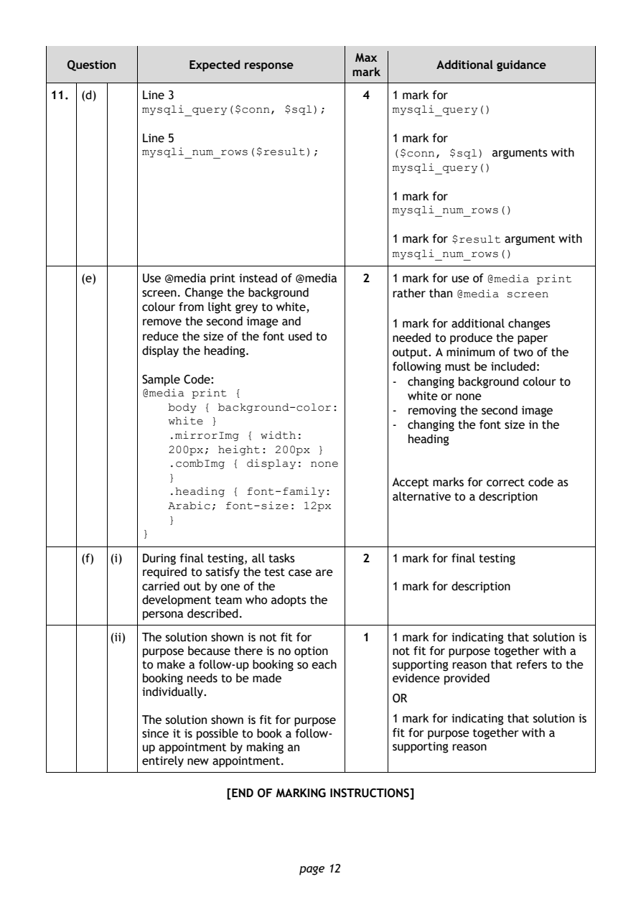
Selectable page text
Max
Question Expected response Additional guidance
mark
11. (d) Line 3 4 1 mark for
mysqli_query($conn, $sql); mysqli_query()
Line 5 1 mark for
mysqli_num_rows($result); ($conn, $sql) arguments with
mysqli_query()
1 mark for
mysqli_num_rows()
1 mark for $result argument with
mysqli_num_rows()
(e) Use @media print instead of @media 2 1 mark for use of @media print
screen. Change the background rather than @media screen
colour from light grey to white,
remove the second image and 1 mark for additional changes
reduce the size of the font used to needed to produce the paper
display the heading. output. A minimum of two of the
following must be included:
Sample Code: - changing background colour to
@media print {
white or none
body { background-color:
- removing the second image
white }
- changing the font size in the
.mirrorImg { width:
heading
200px; height: 200px }
.combImg { display: none
}
Accept marks for correct code as
.heading { font-family:
alternative to a description
Arabic; font-size: 12px
}
}
(f) (i) During final testing, all tasks 2 1 mark for final testing
required to satisfy the test case are
carried out by one of the 1 mark for description
development team who adopts the
persona described.
(ii) The solution shown is not fit for 1 1 mark for indicating that solution is
purpose because there is no option not fit for purpose together with a
to make a follow-up booking so each supporting reason that refers to the
booking needs to be made evidence provided
individually.
OR
The solution shown is fit for purpose 1 mark for indicating that solution is
since it is possible to book a follow- fit for purpose together with a
up appointment by making an supporting reason
entirely new appointment.
[END OF MARKING INSTRUCTIONS]
page 12